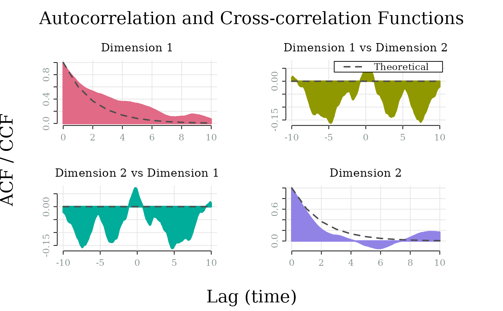
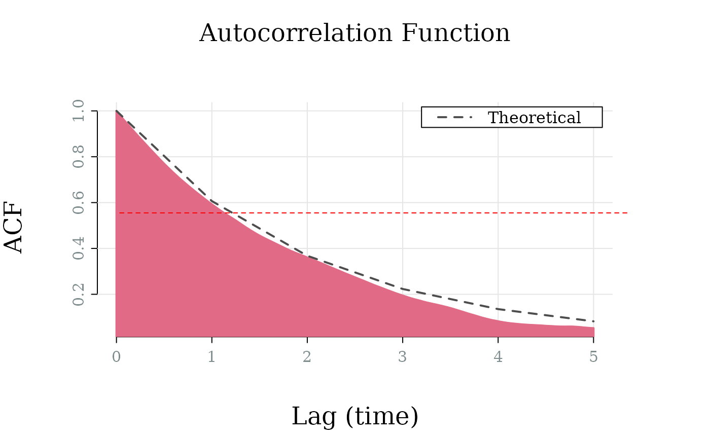

Visualise the empirical and theoretical autocorrelation functions (ACF) and cross-correlation functions (CCF) of an OU affect simulation. The ACF is plotted for each dimension (diagonal panels), while the CCF is plotted for each pair of dimensions (off-diagonal panels). The empirical ACF/CCF is computed from the simulation data, while the theoretical ACF/CCF is derived from the model parameters.
Usage
ou_plot_acf(
x,
lag.max = 10,
which_dim = NULL,
which_sim = 1,
share_yaxis = FALSE,
palette = "Temps",
alpha = 1,
col_theory = "grey30",
main = ifelse(x[["model"]][["ndim"]] == 1, "Autocorrelation Function",
"Autocorrelation and Cross-correlation Functions"),
sub = paste("Dimension", if (is.null(which_dim)) {
seq.int(x[["model"]][["ndim"]])
} else {
which_dim
}),
xlab = "Lag (time)",
ylab = ifelse(x[["model"]][["ndim"]] == 1, "ACF", "ACF / CCF"),
legend_position = "topright",
...
)Arguments
- x
A
simulate_affectOUmodel object produced bysimulate.affectOU()- lag.max
Maximum lag to compute. Specified in terms of saved time points. For example,
lag.max = 10corresponds to 10 time units and 100 lags withsave_at = 0.1.- which_dim
Dimension indices to plot (NULL for all)
- which_sim
Simulation index to plot (default 1). Only one simulation can be plotted at a time.
Logical; use same y-axis limits for all panels?
- palette
Color palette. Should be one
grDevices::hcl.pals().- alpha
Alpha transparency for colors (0 = transparent, 1 = opaque)
- col_theory
Color for theoretical ACF/CCF line
- main
Main title
- sub
Subtitle for panels
- xlab
X-axis label
- ylab
Y-axis label
- legend_position
Position of legend (one of
"bottomright","bottom","bottomleft","left","topleft","top","topright","right","center")- ...
Additional graphical parameters
Theoretical ACF
For the univariate OU process, the autocorrelation at lag \(\tau\) is: $$\rho(\tau) = e^{-\theta \tau}$$
The ACF decays exponentially at rate \(\theta\)—the same rate governing perturbation decay toward the attractor. At lag equal to the half-life (\(\log(2)/\theta\)), the ACF equals 0.5. Faster decay means less predictability over time.
For multivariate processes, diagonal panels show the ACF for each dimension, while off-diagonal panels show the cross-correlation function (CCF) between dimension pairs, which can be non-zero even at lag 0 when dimensions are correlated at equilibrium.
Examples
model <- affectOU(ndim = 2)
sim <- simulate(model, nsim = 3)
ou_plot_acf(sim)

# ACF at half-life equals 0.5
model <- affectOU(theta = 0.5, mu = 0, gamma = 1)
sim <- simulate(model, stop = 500, dt = 0.01, save_at = 0.01)
ou_plot_acf(sim, lag.max = 5)
abline(v = log(2) / 0.5, col = "red", lty = 2) # half-life
abline(h = 0.5, col = "red", lty = 2)
